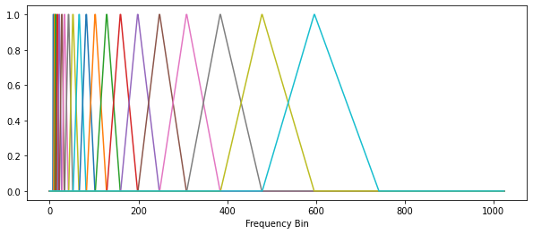
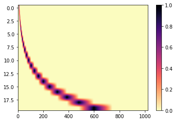
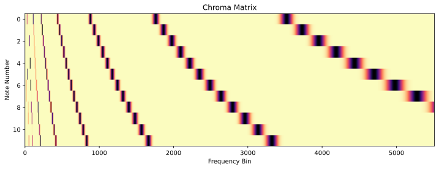
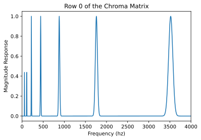
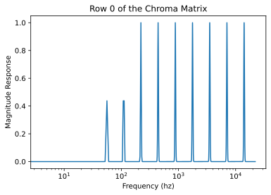
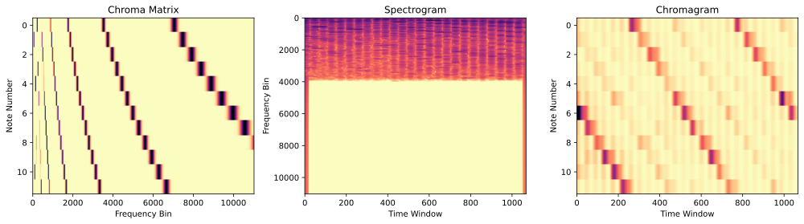

Week 10: Chroma Features And Chromagrams
Chris Tralie
Overview
We saw a couple of weeks ago in this exercise that it is possible to achieve a timbral feature by means of matrix multiplication. In particular, we created a matrix that encompassed a "triangular filterbank," where each row was a triangle centered at a different frequency, and the center frequencies from row to row were spaced out exponentially to match human pitch perception. The rows are plotted individually below:
And we can look at it in matrix form as follows
When we multiply this matrix by a spectrogram on the right we obtain a mel spectrogram.
Today, we are going to create another kind of filterbank, known as a chromogram, which can also be written as a matrix multiplication with a spectrogram. Our goal here is the opposite to what it was with the mel spectrogram; we actually want to pick up on pitches only and to throw the timbral information away. Therefore, each row in the filterbank will correspond to one of 12 different notes, and we will create a bump centered on the center frequency corresponding to each octave of that note. Recall that the equation for the frequency of a pitch p is
\[ f = 440*2^{p/12} \]
We will refer to the note number relative to A, which is 0. So row 0 holds A, row 1 holds A#, row 2 holds B, etc. The image below shows this:
Let's zoom in on the first row:
Observe how there is a peak over 440hz, as well as several octaves below and above, so it doesn't matter what octave we play the note at; they all factor in just the same. If we plot the x-axis on a log scale, we see that they are equally spaced perceptually
If we run the code below
We get the following plot:
Code
Click here to download the starter code for today. You should edit the get_chroma_matrix method to fill in all 12 rows of the chroma matrix. At row index r, place a bump around octaves between 3 below and 5 above the frequency 440*2r/12. For a particular center frequency fc, each bump should be in the form of a Gaussian bump
\[ B(f) = e^{-(f-f_c)^2/\sigma^2} \]
To keep things at a "constant quality factor" (also known as "constant Q"), sigma should be proportional to the frequency